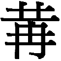
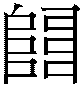

䷩ 益卦 風雷益
益，利有攸往，利涉大川。初九，利用為大作，元吉，无咎。六二，或益之十朋之龜，弗克違，永貞吉。王用享于帝，吉。六三，益之用凶事，无咎。有孚中行，告公用圭。六四，中行，告公從，利用為依遷國。九五，有孚惠心，勿問元吉。有孚惠我德。上九，莫益之，或擊之，立心勿恒，凶。
【卦名】
今本：益 帛書：益 歸藏：諴 清華簡：𠍳 海昏簡：益
益的古文上水下皿，象水滿溢，為溢的本字。後來引申為增加、增益，也可作為有益、益處，利益。《說文》則解釋為「饒」，富饒的意思。
馬國翰輯本《歸藏》可能作諴。「諴」黃宗炎認為是「咸」，看來似乎很有道理，但是《歸藏》中另有「欽」，帛書、清華簡等出土資料也都可證明咸卦古作欽，「諴」或許另有所指。依朱太史看法：「以損為員，而諴次之，則諴為益也。」《說文》：「諴，和也。」
清華簡作𠍳，通說認為這是益的古字，但依《說文》，該字可能是嗌或隘的意思，其字義可能來自咽喉。但觀其古文形構，也可能與毛髮之柔軟而下垂有關。
𠍳字的小篆與籀文下從冄（冉），因此楷書或作、，冄為柔軟而下垂的樣子。《說文》收錄為嗌的籀文：「嗌，咽也。从口益聲。」「，籀文嗌，上象口，下象頸脈理也。」段文裁注說：「嗌者扼也，扼要之處也。咽嗌雙聲。《漢書》：昌邑王嗌痛。《爾雅注》云：江東名咽為嗌。」「此象形字，與亢略同。《漢．百官公卿表》曰：𠍳作朕虞。應劭曰：𠍳，伯益也。師古曰：𠍳，古益字也。按：此假借籀文隘為益，如《九歌》假借古文番為播也。趙宋時，古文《尙書》益作𠍳。此本諸漢表耳。」
另外《說文》卷十四部：「，陋也，，聲。，籀文嗌字。烏懈切。」依段玉裁注，此字為隘的籀文，即狹隘的意思。也可引申為要塞。
總體來看，益卦應該自古卦名就作「益」，歸藏作「諴」必須持疑，可能咸卦之誤。清華簡的𠍳（嗌）可假借為益之外，也可引申為「扼要」。但就《周易》損與益經常對舉來看，還是取傳統的意思即可。減為減損、精省，而益則是增益。
益卦上下二體六爻相應，卦象下震動，上巽入，動而漸入，雷風相與，逐步前進之象。《象》曰：「風雷，益，君子以見善則遷，有過則改。」益卦的努力應當見賢思齊，多向別人觀摩學習，改正自己的錯誤，增加自己的長處為宜。卦象又有長男下於長女，男女相交，婚合之象，故問婚姻、感情大吉。
《彖傳》説：「利涉大川，木道乃行。益動而巽，日進无疆。」巽為木為舟楫，下震為行亦為木，因此二體為舟行之象，故曰「木道乃行」。「益動而巽，日進无疆」言君子若如益象，能動而漸進，則可每日精進而無所限量。
益卦卦象可從上下體來看，也可從「卦變」來看。但《彖傳》的「損上益下」當以卦變來看。益卦源自於否卦，否卦上乾的九四至初即損上益下之象。「損上益下」比喻君王當損己以助益於民，施恩於下，有別於損卦以百姓犧牲小我成就大我。
卦序上益卦為繼損卦而來，與損卦也是卦義相反相成的一對綜卦。《繫辭》說：「損，德之脩也。益，德之裕也。」「損，先難而後易。益，長裕而不設。」「損以遠害，益以興利。」
吉凶的判斷上，益卦和損卦一樣，都比較屬於長遠性的利益，而不是短期、立即性的。就投資來說，損是停損、減少或精簡投資，去除不好的資產；益則是加碼，增加好的資產。就戰略來說，損是斷尾求生，益則是乘勝追擊。損是精省、減少，專一；益是增益、強化，擴大優勢。就修道的功夫來說，損就是去除多餘的欲望、不好的壞習慣，益則是努力修煉，增強自己的能力。
老子說：「為學日益，為道日損。」損是一種修道功夫，而益則是學習的功夫，當不斷增加自己所學，豐富自己的學識內涵，精益求精。
《日講易經解義》論益卦六爻：「自初至四，皆以臣之受益言。五上二爻，則以上之益下言。蓋益以興利，初利用為大作，是為天下萬世之大計，非尋常之報効也。二用享帝，為靖獻之大誼。三益用凶事，為盤錯之大任。四利用為依遷國，為安民之大舉。皆非小益之事。至九五之元吉，由惠心之有孚。上九之莫益，由立心之勿恒。則興利之原，未有不本於君心者也。」
《彖傳》以「損上益下」解釋益卦，因此上三爻有益下之責，但唯有九五君位為真能益下者。九五同與四比應，與二遠應。而六四雖應初九陽剛，但本質柔弱。上九雖與三遠應，但居極而無位。
益，利有攸往，利涉大川。
- 《彖》曰：益，損上益下，民說无疆；自上下下，其道大光。利有攸往，中正有慶；利涉大川，木道乃行。益動而巽，日進无疆；天施地生，其益无方。凡益之道，與時偕行。
- 《象》曰：風雷，益，君子以見善則遷，有過則改。
- 《繫辭》：包犧氏沒，神農氏作。斲木為耜，揉木為耒，耒耨之利，以教天下，蓋取諸益。
- 《繫辭》：損，德之脩也。益，德之裕也。……損，先難而後易。益，長裕而不設。……損以遠害，益以興利。
- 帛本《繫辭》：損也者德之脩也，益也者德之譽也。……損，先難而後易。益，長裕而與。……損以遠害也，益以興禮也。
- 《雜卦》：損益，盛衰之始也。
攸，遠，或所。利有攸往即利有遠往，或利有所往，就是利於出行、利於遠行的意思。也可解釋為利益有遠往，即有長遠的利益。
益卦上巽木，為舟楫，可以渡水救險。下震卦為行，亦屬木，上下二體為舟行之象，因此說「利涉大川」。《易經》中凡言「利涉大川」都在比喻可以冒險犯難，險中求通的意思。大川比喻危險，涉為徒行渡水，水過膝則稱涉。利涉大川，利於冒險一試，做事可以冒些風險。
鄭玄：人君之道，以益下為德，故謂之益也。震為雷，巽為風。雷動風行，二者相成，猶人君出教令，臣奉行之，故利有攸往。坎為大川，利涉大川矣。
孔穎達：益者，增足之名，損上益下，故謂之益。下已有矣，而上更益之，明聖人利物之无已也。損卦則損下益上，益卦則損上益下，得名皆就下而不據上者，向秀云：「明王之道，志在惠下，故取下謂之損，與下謂之益。」
【字義】
風雷益：孔穎達：「言必須雷動於前，風散於後，然後萬物皆益。如二月啟蟄之後，風以長物；八月收聲之後，風以殘物。風之為益，其在雷後，故曰風雷益也。」
初九，利用為大作，元吉，无咎。
《象》曰：元吉无咎，下不厚事也。
適於有大的作為，大吉則可免於罪咎。
初九陽剛當位，又與六四相應，處於震卦的初爻，因此正是可以有所作為的時候。只是初九地位卑微，不免被人看低，若事情沒做好，則罪咎也會更大。只有大的作為，做出大好成績，才能免於罪咎，因此爻辭說「元吉，無咎」，大作為、大吉之後才能無咎。《象傳》說：「下不厚事也。」
【字義】
大作：有多種解釋，一是大的制作、大的作為。孔穎達：「大作謂興作大事也。」二是農作，虞翻：「大作謂耕播耒耨之利。」「震，三月卦，日中星鳥，敬授民時，故以耕播也。」侯果：「大作，為耕植也。」《繫辭》：「斲木為耜，揉木為耒，耒耨之利，以教天下，蓋取諸益。」六日七分圖上益卦在立春與雨水之交的時候，正值春耕之時。下卦震，後天八卦圖在東方，為春天，正是耕作之時，清華簡《筮法》震卦名或，像「農」字。三是大臣之作為，《顧命》：「毋以小謀敗大作。」鄭玄注：「小謀，小臣之謀也。大作，大臣之所為也。」《日講》：「大作，謂大有作為。」四是大興土木，興建宮室。「作」古文作「乍」，甲古文中有「乍邑」一辭，為興建之義。金文中有「乍......（器物）」，為鑄作。李鏡池：「大作：大興土木，建築。《詩經》中多稱建築為作。」「這個大作，似指太王遷岐後作廟築城、文王作豐、周公營建洛邑等。」《詩經．文王有聲》「作邑于豐」，〈定之方中〉「作于楚宮」、「作于楚室」。
六二，或益之十朋之龜，弗克違，永貞吉。王用享于帝，吉。
《象》曰：或益之，自外來也。
有人拿著價值十朋貝的烏龜來幫助，無法違背，永保貞定為吉。大王藉以敬祀天帝，吉。
十朋之龜意指價值不斐的烏龜，大寶龜。朋為貝或玉的交易單位，一朋二串，每串五枚，因此十朋為一百枚的貝。
龜在古時為神聖的決疑寶物，從選龜到如何處理、儲藏，都有嚴格的規矩。因此龜的幫助類似於我們在說「神明」保祐。
根據饒宗頤說法，卜辭中有「益龜」一語，並引損卦及益卦爻辭說：「殷周行卜，每用多龜，增益卜龜之數，故曰益龜。」（《殷代貞卜人物通考》第三六頁）那麼損益兩卦可能講的都是古代在龜卜的過程，「或益之十朋之龜」可能是占卜時有人增益了一隻最為珍貴的「十朋之龜」來讓占卜結果更為神準而讓人不可違逆。
損卦六五也同樣說「或益之十朋之龜」，損六五及益六二爻變之後，全卦都變成中孚，中孚為大離之象，離為龜，因此為十朋之大寶龜。互體坤，坤為眾為朋為十，故曰「十朋」。
傳統以覆象來解釋損六五與益六二，認為損卦翻轉就是益卦，益卦翻轉則成損。益之六二即損之六五，因此兩爻皆曰「或益之十朋之龜」。如朱震《漢上易傳》：「益損之反，益之六二即損之六五，故其象同。」
【字義】
十朋之龜：朋原本為古代串貝或串玉做為貨幣的單位，根據王國維說法，一朋兩串，一串五枚，所以一朋就有十枚。十朋相當於二十串或一百枚貝。十朋之龜為價值十朋貝，或一百枚貝的龜，喻指價值不斐。但一朋有多少貝，自古說法分歧。唐．崔憬以雙貝為朋：「價值二十大貝，龜之最神貴者，以決之，不能違其益之義。故獲元吉。雙貝曰朋也。」鄭玄以五貝為一朋，《詩經》「既見君子，錫我百朋」鄭箋：「古者貨貝，五貝為朋。」另一解釋以朋為計量單位，十朋之龜為一百枚的龜。但朱熹採「雙貝為朋」之說，而以一朋為二龜：「兩龜為朋，十朋之龜，大寶也。」漢易以朋為類，十朋即十類之龜，如馬融、鄭康成：「十朋之龜者一曰神龜，二曰靈龜，三曰攝龜，四曰寶龜，五曰文龜，六曰筮龜，七曰山龜，八曰澤龜，九曰水龜，十曰火龜。」虞翻：「坤數十，兌為朋，三上失位，三動離為龜。十謂神、靈、攝、寶、文、筮、山、澤、水、火之龜也，故十朋之龜。」此十龜之說，出自《爾雅》。王弼以朋為朋黨，「或益之十朋之龜」為同時受到朋友以及靈龜的幫助，此說完全曲解文義。損六五注：「朋，黨也。龜者，決疑之物也。陰非先唱，柔非自任，尊以自居，損以守之。故人用其力，事竭其功，知者慮能，明者慮策，弗能違也，則眾才之用盡矣。獲益而得十朋之龜，足以盡天人之助也。 」
王用享于帝：享，祭祀、敬獻的意思。孔穎達：「帝，天也。」
六三，益之用凶事，无咎。有孚，中行，告公用圭。
《象》曰：益用凶事，固有之也。
努力救濟凶阨之事，沒有罪咎。但應秉持誠信，行事中間，應當慎重其事地用玉圭作為信物，稟告於公侯。
三為多凶多憂的爻位，互體坤，爻動成坎，動輒得咎之象。六三以柔居剛，不當位，原本不當有所作為，但遇凶事，不但要努力救濟，還必需秉持誠信，慎重其事，不斷回報狀況，才可免於罪咎。
有孚，孚者誠信，有孚即秉持誠信。
公，王公、公侯。用圭，圭為古時與長官以及神明互為通信的媒介，有「取信於上」的意思。告公本身就有取信於上的意思，還必需用圭，則表示更為慎重其事，避免被猜疑。
【字義】
凶事：先儒注解多未特別說明凶事為何事，但依文義，大致指的是凶阨危難之事。程頤：「凶事，謂患難非常之事。」蔡淵：「凶事，困心衡慮之事。」凶事也可能意指喪事，如《禮記．禮器》「凶事不詔」孔穎達疏：「凶事，喪親之事也。詔，告也。」《周禮》：「凡吉事變几，凶事仍几。」「凡吉凶之事，祖廟之中沃盥，執燭。」鄭玄注：「吉事，四時祭也。凶事，後王喪朝於祖廟之奠。」《左傳》隱公元年：「外姻至，贈死不及尸，弔生不及哀。豫凶事，非禮也。」
中行：有四種解釋，一、通解為中庸的行為，行事中庸。二、行程之中、行事中間。三、軍隊，《左傳》僖公二十八年：「荀林父將中行。」四、中行氏，即荀林父之後代，以中行為氏，李零持此說。六四爻也有「中行，告公從」。《周易》中「中行」共出現五次，除了益卦三、四兩爻之外，還有泰九二「得尚于中行」，復六四「中行獨復」，夬九五「中行无咎」。傳統皆以中庸之行為解釋，就象來說，應該是二或五兩個爻位符合中庸之德，但總觀《周易》，三與四兩個爻位共出現三次「中行」，二與五各一次。三與四言「中行」可能是以全卦六畫之中而言，或以此來象徵行程之中。
告公：王弼：「公者，臣之極也。凡事足以施天下，則稱王；次天下之大者，則稱公。」
六四，中行，告公從，利用為依遷國。
《象》曰：告公從，以益志也。
行程之中稟告於公侯，公侯無不順從，甚至連遷國這麼大的事也有利。
君主聽從建議，上下共同協謀，基於對大局利益之考量，而遷國以安撫百姓。適於遷移，凡可遷移者都大吉。下屬則能得到上級的信任而得以做大事。
六三、六四都講「中行」與「告公」。但六三所受到的信任顯然不如六四，因此六三要用圭（信物），六四不需用圭，什麼原因？六三位不正，與九五之君不相鄰亦不相應，其行事是因急難而不得不為。六四不但當位，而且與九五之君比應，因此不需信物，只需稟告一聲，就被充份授權，而得以做大事。
易經符合「中」象的只有二、五兩爻，二為下卦之中，五為上卦之中。益卦三、四為何都講「中行」？說法有許多種。例如，以六三及六四居於整卦的中間。其次，「不中」是三、四兩爻的弊病，「中行」是告誡之辭，因爻不具中德，因此告誡問筮者要秉持中德。
【字義】
利用為依遷國：有二種解釋：一是依作依靠，為依遷國，為了讓國家有所依靠而遷國。孔穎達：「如周之東遷，晉鄭焉依之義也。」《程傳》：「為依，依附於上也。遷國，順下而動也。」傳統以此說為主。二是依假借為殷，利用為殷遷國，即周公奉成王之命平定三監之亂，之後遷殷國遺民成立宋國之事。于省吾《易經新證》：「應讀作『利用為殷遷國』......指成王時事以為言也。《史記‧周本紀》：『周公奉成王命，伐誅武庚、管叔，放蔡叔。以微子開代殷後，國於宋。頗收殷餘民，以封武王少弟封為衛康叔。』是遷殷國於宋，而封康叔於殷虛朝歌也。」屈萬里：「金文多假衣作殷。」「此依字疑亦應作殷，言利用為殷遷國也。」李鏡池：「依：即殷，古音同。」「說把殷遺民處理好是有利的。」
九五，有孚惠心，勿問，元吉，有孚惠我德。
《象》曰：有孚惠心，勿問之矣；惠我德，大得志也。
有誠信，而且能恩惠及於人心，此事不須問，大善而吉。我以誠信恩惠於人，人亦以誠信回報所受之恩德。
能利益於人至於惠及人心，人亦回報於我而惠及我德，大善而吉。益卦為「損上益下」，九五為損己以利人者，是益卦的卦主，也是能夠利益於天下的一國之君。九五若能誠心利益於天下，恩惠深入到人心，至於大善則吉。
【字義】
惠心：兩種解釋，一是以惠為恩惠、利益，惠心為恩惠及於人心。如王弼：「為益之大，莫大於信；為惠之大，莫大於心。因民所利而利之焉，惠而不費，惠心者也。」王弼注解源自《論語‧堯曰》孔子論從政之「五美」，第一美為「惠而不費」：「因民之所利而利之，斯不亦惠而不費乎？」後世易學家多偏向王弼說法。二是以惠為順，惠心即順心。俞琰：「惠，順也，與《書．大禹謨》『惠迪吉』之惠同。」「惠迪吉」即「順道吉」。
勿問元吉：不待問而元吉。王弼：「信以惠心，盡物之願，固不待問而元吉。」呂祖謙：「人君但誠心惠民，不須問民之感，如此然後元吉，民皆交孚而惠君之德也。苟惠民而先問民之感不感，是計功利，非誠心惠民者也，安能使民之樂應乎。」李光地：「勿問二字，呂氏說是，觀孔子《象傳》可見。」
有孚惠我德：有誠信而能回報我的恩德。惠原為恩惠，這裡作回報。惠我德，回報我的恩德。
上九，莫益之，或擊之。立心勿恒，凶。
- 《象》曰：莫益之，偏辭也；或擊之，自外來也。
- 《繫辭》：子曰：君子安其身而後動，易其心而後語，定其交而後求。君子脩此三者，故全也。危以動，則民不與也；懼以語，則民不應也；无交而求，則民不與也。莫之與，則傷之者至矣。易曰：「莫益之，或擊之，立心勿恆，凶。」
- 帛書《要》：君子安其身而後動，易亓心而后定，位而后求。君子脩此三者，故存也。危以動，則人弗與也；無立而求，則人弗予也。莫之予，則傷之者必至矣。易曰：「莫益之，或擊之。立心勿恆，凶。」此之胃也。
不能有益於民，因而受到各方的攻擊。完全沒有持久的恒心，凶。
上九處益之上，益卦應該是損上益下的時候，但上九陽剛居極，凌駕於九五之尊，非但不能利益於他人，還反過來要人利益於己，是無功而居功、邀功者。若偶有行善，也只因一己之利，所以無恒心可言。凶。
或，有人，不特定的人。擊，攻擊。謂來自各方的打擊。《象傳》說：「或擊之，自外來也。」
益卦為努力上進，其效益在長久而逐漸，所以卦象下為雷動，上為巽入（逐漸進入），《繫辭》說「益，長裕而不設」。上九並不是以恒久的心態做事，行善只是基於短期的私利，所以為凶。
王弼：處益之極，過盈者也。求益无已，心无恒者也。无厭之求，人弗與也。獨唱莫和，是偏辭也。人道惡盈，怨者非一，故曰或擊之也。
【字義】
偏辭也：或作「徧辭也」。《釋文》引孟喜曰：「徧，周帀也。」虞翻：「徧，周匝也。」
【彖傳注】
《彖》曰：益，損上益下，民說无疆，自上下下，其道大光。利有攸往，中正有慶；利涉大川，木道乃行。益動而巽，日進无疆。天施地生，其益无方。凡益之道，與時偕行。
損上益下，民說无疆：以卦變解釋卦義。益卦是從否卦而來，否九四至初，初六至四，損上卦乾之陽，益下卦坤之陰，為損上益下。損上益下為君子施德於眾之義，因此民說無疆。向秀：「王之道志在惠下，故取下謂之損，與下謂之益。」孔穎達：「益者，增足之名，損上益下，故謂之益。」
自上下下，其道大光：否卦上卦剛爻至初，初九居卦體及兩陰爻之下，為自上下下。乾為道為大明為君子，坤為眾為民。君子下下，施德於民，其道大光之義。
利有攸往，中正有慶：以九五主爻解釋經文利有攸往。初九乃卦變成卦之主爻，九五乃治卦之主爻。九五中正而有功，與六四比應，與六二遠應。損卦為損下益上，泰卦九三上行至上，因此為陽進之卦，為利有攸往。但益卦為損上益下，否九四下行至初，為陽退之卦，為何利有攸往，而且還利涉大川？這是因為益卦有舟行之象。
利涉大川，木道乃行：以上下二體卦象解釋經文利涉大川。巽為木，震為行，木道乃行之象。木道乃行，行舟之義，因此曰利涉大川。
益動而巽，日進无疆：上下二體卦德解釋卦義。下震為動，上為巽。動而巽之象。巽為入為漸進，動而可進能入，因此曰日進無疆。
天施地生，其益无方：否卦上乾陽布施陽氣於坤，坤為地，震為生。坤得陽而廣生。
“利用為為依遷國”多一“為”。
“利用為為依遷國”多一“為”。